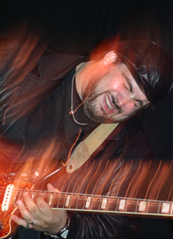
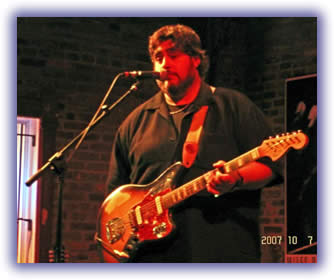
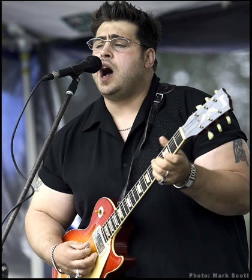

Романтизация прокуренных чикагских таверн и рынка на Максвелл-стрит продолжается. Флаг берет в руки Ник Мосс.
Джимми Роджерс (Jimmy Rogers), называл его продолжателем, коллегой и факелоносцем. Бадди Гай (Buddy Guy) называет его любимцем своего клуба "Legends": "Я не нарадуюсь, глядя как он играет и как работает изо всех сил, чтобы угодить публике". И Бадди регулярно выходит на сцену поиграть с группой The Flip Tops Ника Мосса, когда они выступают в его клубе. Архивариусы сказывают, что "ухватил Мосс волшебство чикагской электрогитары".
Сам Мосс занимает простую позицию: "Я не пытаюсь заново изобрести колесо и даже не стараюсь перетащить старое в новое тысячелетие. Я просто играю то, что мне поручили, и стараюсь делать это честно. Я испытываю глубочайшее уважение к тем, кто учил меня - я играл с Джимми Докинсом, я играл с Джимми Смитом, я играл с Джимми Роджерсом - я всем сердцем люблю эту музыку, и не считаю, что в ней нужно что-то особенно менять. Я хочу найти ту границу, где мне не придется идти на компромиссы, стараясь сохранить подлинность этой классической музыки, и в то же время сыграть ее так, чтобы это звучало свежо, так, чтобы меня слушали не только убежденные почитатели блюза".
"Я внимательно слушал почти всех гитаристов 50-х, 60-х и 70-х годов, особенно чикагских, и попытался что-то взять у каждого. Но я не считаю себя копировальщиком нота в ноту. Я воспринял их стиль, их чувство и ритм. Я стараюсь слушать и понимать то, что они делали".
Ник пытается быть серьезным и важным. На самом деле его группа звучит по-хорошему разгильдяйски. Это именно тот Дельта-блюз, который недавно переехал в Миссиссиппи. Хотя никто не спутает, что он, блюз, уже совсем белый на вкус.
Малыш Ник увлекался спортом. И хорошо кушал. В 14 лет он дорос до 189 см и набрал 113 кило живого веса. В чикагских клубах строго подростков не пускают вечером, но у такого бугая, как Ник, проблем с фейс-контролем не было. Да и старший брат Джо помогал. Ник рос, слушая, как брат играет на гитаре блюз, джаз, фанк, соул и немного джаза. Брат выступал иногда с Бадди Скоттом и брал Ника с собой на клубные концерты.
А в 18 лет на Ника накинулась так и не диагностированная инфекция. Почечная функция отрубилась на 80%. Лежал Ник в Детской Больнице и очень огорчался своею судьбой. Брат его Джо уговорил докторов, что поднять Нику настроение можно только сводив его послушать блюз. Похоже на сказку, но доктора поняли. Видимо, и сами ходили лечить свой блюз в те же клубы.

Местечко называлось "Клуб умных дуралеев" (Wise Fools Pub). Ник рассказывает так: "На мне был плащ. Из пуза торчали трубки. Из них моя моча стекала в специальный пузырь, потому что почки у меня не работали. Вот так мы перешли через улицу и оказались в клубе, где играли Little Charlie and the Nightcats - это было их первое выступление в Чикаго.""Я помню, я стоял смотрел и слушал этих ребят. И я думал: вот я теперь не смогу играть в футбол, не смогу заниматься борьбой. Но, если до конца моих дней я смогу делать то, что делают эти ребята, и еще и зарабатывать этим на жизнь, то я смогу еще быть счастлив".
Первым блюзовым ментором для Ника стал Джимми Докинс. Просто потому, что Докинсу был нужен бас-гитарист, и он позвал слонявшегося без дела Мосса. "Я просто случайно оказался на их концерте, когда им нужен был басист. Я сам не знал, кто он был. Только потом, когда я уже стал постоянно играть с ними, я узнал, что большая величина."
Прорыв случился в 1993 году, когда в басисты Ника позвал воистину Легендарный Legendary Blues Band - блюз-бэнд Мадди Уотерса (Muddy Waters), осиротевший без своего создателя. Войдя в его ритм-секцию, Ник Мосс оказался под опекой барабанщика Уилли "Большеглазого" Смита (Willie "Big Eyes" Smith). "Это был мой любимый бэнд. И Уилли Смита я до сих пор люблю. Он стал моим отцом. Он научил меня двум вещам: Первое - гордится собой прямо здесь и сейчас; Второе - ритму и чувству блюза, каким они должны быть."
В середине 90-х Мосс оказался бас-гитаристом Джимми Роджерса: "Послушайте те записи Мадди (Уотерса), где играют Джимми, Отис Спэнн (Otis Spann) и Литл Уолтер (Little Walter)! Кажется, что они стараются переиграть один другого. Но нигде один не переходит дорогу другому. Впечатление такое, что все они солируют одновременно, и нисколько не мешают друг другу!"
Мосс стал вторым гитаристом в группе Джимми Роджерса и принялся скрупулезно изучать историю чикагского электрогитарного блюза, особо уделяя внимание Louis Myers, Robert Lockwood, Earl Hooker и Johnny Littlejohn.

И, наконец, в конце 90-х, когда Роджерс потихоньку уже сокращал концертную деятельность, Мосс решил, что уже прошел чикагские блюзовые университеты и готов к самостоятельному полету. Появилась группа The Flip Tops, их второй альбом уже был номинирован на премию им W.C. Handy: это, надо сказать, очень неплохо для белых дебютантов, учитываю пуристскую идеологию жюри. На победу нечего было и надеяться, но сам факт, что их сразу заметили, служит добрым знаком. Третий альбом Count Your Blessings Мосс, пользуясь хорошими старыми знакомствами, записал вместе с уважаемыми им ветеранами: Sam Myers, Anson Funderburgh, Willie Smith, Curtis Salgado и Lynwood Slim. Доказывая, что блюз - это его личное дело, свой четвертый альбом в 2005 году Мосс назвал именем своей любимой доченьки: Sadie Mae.С 2001 по 2007 альбом Мосс испек шесть альбомов (последний - двойной), собрав 11 номинаций на премию им. W.C.Handy (ныне Blues Music Award). "Я чувствую, что мы - один из очень немногих бэндов, кто играет Чикагский блюз так, как люди его понимают. Я не считаю себя "суперзвездой", или кем-то в этом роде. Но мне приятно, что ко мне относятся с большим уважением. И мне странно думать, что прошло уже 20 лет. Для мне все началось с ловно вчера. Я вспоминаю, как еще маленьким мальчиком слушал те старые пластинки. И что то во мне откликалось на эту музыку почти на физическом уровне."
В марте 2008 года гастрольные пути The Flip Tops и Little Charlie and the Nightcats пересеклись в Европе.
"Вот прошло 20 лет, и я зашел на концерт Литл Чарли, он сейчас собирается отойти от концертных дел. И, как не странно, все эти ребята помнят меня и моего брата в тот вечер. Такие вещи для меня дорогого стоят. В тот вечер я принял правильное решение, и держался за него. Возможно, это было первое взрослое решение в моей жизни."
А.В.Евдокимов - по материалам зарубежной печати.